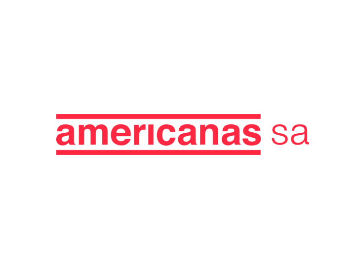

Arthur Deboni
Um Analista de Dados apaixonado por transformar dados em insights acionáveis. A Data Analyst passionate about transforming data into actionable insights. Un Analista de Datos apasionado por transformar datos en insights accionables.
Especialista emSpecialist inEspecialista en
Análise de DadosData AnalysisAnálisis de Datos
Sobre MimAbout MeSobre Mí
Formando emUndergraduate inEstudiante de
Ciência da ComputaçãoComputer ScienceCiencias de la Computación
Olá! Sou Arthur Deboni, um analista de dados com 1 ano de experiência em ajudar empresas a tomar decisões mais inteligentes através da análise de grandes volumes de dados. Minha paixão é encontrar padrões, tendências e insights que podem impulsionar o crescimento e a eficiência. Sou proficiente em ferramentas como Python, SQL, Power BI, Looker Studio, Excel e Sheets. Hello! I'm Arthur Deboni, a data analyst with 1 year of experience helping companies make smarter decisions through big data analysis. My passion is finding patterns, trends, and insights that can drive growth and efficiency. I am proficient in tools like Python, SQL, Power BI, Looker Studio, Excel, and Sheets. ¡Hola! Soy Arthur Deboni, un analista de datos con 1 año de experiencia ayudando a empresas a tomar decisiones más inteligentes a través del análisis de grandes volúmenes de datos. Mi pasión es encontrar patrones, tendencias e insights que puedan impulsar el crecimiento y la eficiencia. Soy competente en herramientas como Python, SQL, Power BI, Looker Studio, Excel y Sheets.
Nascido e criado no Rio de Janeiro, hoje estou morando e realizando minha graduação em Portugal. Born and raised in Rio de Janeiro, I currently live and pursue my degree in Portugal. Nacido y criado en Río de Janeiro, actualmente vivo y realizo mi carrera universitaria en Portugal.
Acredito que a chave para uma boa análise de dados reside não apenas na habilidade técnica, mas também na capacidade de comunicar resultados complexos de forma clara e concisa para diferentes públicos. Estou sempre buscando aprender novas tecnologias e metodologias para aprimorar minhas habilidades e entregar resultados cada vez melhores. I believe the key to good data analysis lies not only in technical skill but also in the ability to communicate complex results clearly and concisely to different audiences. I am always seeking to learn new technologies and methodologies to improve my skills and deliver increasingly better results. Creo que la clave para un buen análisis de datos reside no solo en la habilidad técnica, sino también en la capacidad de comunicar resultados complejos de forma clara y concisa a diferentes públicos. Siempre busco aprender nuevas tecnologías y metodologías para mejorar mis habilidades y entregar resultados cada vez mejores.
Habilidades TécnicasTechnical SkillsHabilidades Técnicas
Formação AcadêmicaEducationFormación Académica
Bacharelado em Ciência da Computação Bachelor of Computer Science Grado en Ciencias de la Computación
Universidade Veiga de Almeida (UVA) | 2023 - 2025
- Disciplinas de computação, tecnologia, modelagem, estatística, programação, BI, ética de trabalho, entre outras.Courses in computing, technology, modeling, statistics, programming, BI, work ethics, among others.Asignaturas de computación, tecnología, modelado, estadística, programación, BI, ética laboral, entre otras.
- Pauta Geral 8.8/10GPA 8.8/10Nota Media 8.8/10
Licenciatura em Ciência da ComputaçãoBachelor's Degree in Computer ScienceLicenciatura en Ciencias de la Computación
Universidade do Minho (UMinho - Portugal) | 2025 - 2027
- Tive a oportunidade de concluir minha graduação em uma universidade europeia renomada.I had the opportunity to complete my degree at a renowned European university.Tuve la oportunidad de concluir mi carrera en una universidad europea de renombre.
- Cursei disciplinas com enfoque em matemática computacional e estatística aplicada.I took courses focused on computational mathematics and applied statistics.Cursé asignaturas con enfoque en matemática computacional y estadística aplicada.
- Membro do Núcleo de Estudantes de Ciências da Computação (NECC - Uminho)Member of the Computer Science Students' Nucleus (NECC - Uminho)Miembro del Núcleo de Estudiantes de Ciencias de la Computación (NECC - Uminho)
Curso de InglêsEnglish CourseCurso de Inglés
CEI Centro de Idiomas | 2018 - 2020
- Conclui formação em inglês geral com nível avançado.Completed general English training at an advanced level.Formación en inglés general completada con nivel avanzado.
Experiência ProfissionalProfessional ExperienceExperiencia Profesional
Estagiário de Dados e PerfomanceData and Performance InternBecario de Datos y Rendimiento
Americanas SA. | 2024 - 2025
- Extração, transformação e carregamento (ETL) de dados de múltiplas fontes, utilizando SQL, Python e Excel.Extraction, transformation, and loading (ETL) of data from multiple sources, using SQL, Python, and Excel.Extracción, transformación y carga (ETL) de datos de múltiples fuentes, utilizando SQL, Python y Excel.
- Desenvolvimento de dashboards interativos em Looker Studio para visualização e acompanhamento de KPIs.Development of interactive dashboards in Looker Studio for visualization and tracking of KPIs.Desarrollo de cuadros de mando interactivos en Looker Studio para visualización y seguimiento de KPIs.
- Mapeamento e Otimização de Processos.Process Mapping and Optimization.Mapeo y Optimización de Procesos.
- Implementação de Soluções Tech e Automatizadas para serviços operacionais.Implementation of Tech and Automated Solutions for operational services.Implementación de Soluciones Tecnológicas y Automatizadas para servicios operativos.
- Formulação de POPs e Diretrizes da companhia.Formulation of SOPs and Company Guidelines.Formulación de POEs y Directrices de la empresa.

Meus ProjetosMy ProjectsMis Proyectos
Projetos ProfissionaisProfessional ProjectsProyectos Profesionales
Gestão à vista SuprimentosSupply Chain Visual ManagementGestión Visual de Suministros
Americanas SA (2025)
Dashboard interativo para monitoramento de KPIs do time de suprimentos, desenvolvido em Looker Studio com integração de APIs e automações em Python.Interactive dashboard for monitoring Supply Chain team KPIs, developed in Looker Studio with API integration and Python automation.Panel interactivo para monitoreo de KPIs del equipo de suministros, desarrollado en Looker Studio con integración de APIs y automatización en Python.
Dashboard de Serviços CSCCSC Services DashboardPanel de Servicios CSC
Americanas SA (2025)
Dashboard gerencial para monitoramento mensal de atingimento de metas e SLAs de serviços prestados pelas áreas da diretoria de CSC. Construído no Looker Studio com dados de áreas externas.Managerial dashboard for monthly monitoring of goal achievement and SLAs of services provided by the CSC directorate areas. Built in Looker Studio with external data.Panel gerencial para el monitoreo mensual del cumplimiento de metas y SLAs de servicios prestados por las áreas de la dirección de CSC. Construido en Looker Studio.
Acompanhamento OrçamentárioBudget MonitoringSeguimiento Presupuestario
Americanas SA (2025)
Dashboard interativo para monitoramento financeiro da Vice-Presidência de Compliance com atualização em tempo real. Construído no Looker Studio com processo end to end (GCP --> Painel).Interactive dashboard for financial monitoring of the Compliance VP with real-time updates. Built in Looker Studio with end-to-end process (GCP --> Panel).Panel interactivo para el seguimiento financiero de la Vicepresidencia de Cumplimiento con actualizaciones en tiempo real (GCP -> Panel).
ETL e Automação de Dados de CadastroETL and Registration Data AutomationETL y Automatización de Datos de Registro
Americanas SA (2025)
Captação de Dados espelhados do banco de dados de um sistema de cadastro, realização de ETL complexo utilizando PowerQuery e automação da Dashboard utilizando Power Automate e Sheets.Capture of mirrored data from a registration system database, complex ETL execution using PowerQuery, and dashboard automation using Power Automate and Sheets.Captación de datos espejados de la base de datos de un sistema de registro, ejecución de ETL complejo utilizando PowerQuery y automatización vía Power Automate y Sheets.
Portal CSCCSC PortalPortal CSC
Americanas SA (2025)
Formulação de Site Executivo no SharePoint para centralizar informações e chamados de todas as áreas da Diretoria do CSC.Creation of an Executive Site on SharePoint to centralize information and tickets for all CSC Directorate areas.Formulación de un Sitio Ejecutivo en SharePoint para centralizar información y tickets de todas las áreas de la Dirección de CSC.
Catálogo de SLAsSLA CatalogCatálogo de SLAs
Americanas SA (2025)
Levantamento, estruturação e formalização dos serviços prestados e dos acordos de SLAs utilizadas na diretoria do CSC.Survey, structuring, and formalization of services provided and SLA agreements used in the CSC directorate.Levantamiento, estructuración y formalización de los servicios prestados y de los acuerdos de SLAs utilizados en la dirección del CSC.
Fluxo de Solicitações de Compras de SuprimentosSupply Purchase Request FlowFlujo de Solicitudes de Compra de Suministros
Americanas SA (2025)
Mapeamento, otimização e passagem de fluxo de compras de suprimentos da Americanas SA para nova ferramenta - Checklist Fácil.Mapping, optimization, and handover of the supply purchase flow from Americanas SA to a new tool - Checklist Fácil.Mapeo, optimización y traspaso del flujo de compras de suministros de Americanas SA a una nueva herramienta - Checklist Fácil.
Diretriz de ReembolsoReimbursement GuidelineDirectriz de Reembolso
Americanas SA (2025)
Criação de regras e utilização de regras antigas da companhia para formular a diretriz de reembolsos internos da Americanas SA.Creation of rules and utilization of old company rules to formulate the internal reimbursement guideline for Americanas SA.Creación de reglas y utilización de reglas antiguas de la empresa para formular la directriz de reembolsos internos de Americanas SA.
Cost Accounting da DiretoriaDirectorate Cost AccountingContabilidad de Costos de la Dirección
Americanas SA (2025)
Levantamento e contabilização de todos os custos da Diretoria do CSC, utilizando dados de ERP e realizando análises categorizadas.Survey and accounting of all CSC Directorate costs, using ERP data and performing categorized analyses.Levantamiento y contabilización de todos los costos de la Dirección de CSC, utilizando datos de ERP y realizando análisis categorizados.
Projetos AcadêmicosAcademic ProjectsProyectos Académicos
Site Acadêmico MundoMedMundoMed Academic SiteSitio Académico MundoMed
Universidade Veiga de Almeida (2023)
Site fictício de uma Clínica Médica com diversas especialidades.Fictional website for a Medical Clinic with various specialties.Sitio web ficticio para una Clínica Médica con diversas especialidades.
Modelagem de Sistema de PetShopPetShop System ModelingModelado de Sistema de PetShop
Universidade Veiga de Almeida (2024)
Modelagem Completa de um sistema de vendas fictício para um PetShop, com funcionalidades de gestão de estoque, clientes, produtos e vendas.Complete modeling of a fictional sales system for a PetShop, with inventory, customer, product, and sales management functionalities.Modelado completo de un sistema de ventas ficticio para un PetShop, con funcionalidades de gestión de stock, clientes, productos y ventas.
Bot de Arbitragem CriptoCrypto Arbitrage BotBot de Arbitraje de Criptomonedas
BugsByte Hackathon 2026
Bot construído em Python como projeto proposto para o Hackathon BugsByte 2026Bot built in Python as a proposed project for the BugsByte 2026 Hackathon.Bot desarrollado en Python como proyecto propuesto para el Hackathon BugsByte 2026.
CertificaçõesCertificationsCertificaciones
Fast MBA - Projects | Gerenciamento de Projetos
André Bernardo - Udemy | 2025
Fundamentos de gerenciamento de projetos, definição e controle de cronogramas, análise e mitigação de riscos, gerenciamento de escopo e aplicação de boas práticas em metodologias ágeis. Fundamentals of project management, schedule definition and control, risk analysis and mitigation, scope management, and application of best practices in agile methodologies. Fundamentos de gestión de proyectos, definición y control de cronogramas, análisis y mitigación de riesgos, gestión de alcance y aplicación de buenas prácticas en metodologías ágiles.
Data Analysis with Python
IBM - Cognitive Class | 2024
Princípios teóricos e práticos de análise de dados com Python. Aulas ministradas por cientistas de dados renomados da IBM. (Ministrado em Inglês) Theoretical and practical principles of data analysis with Python. Classes taught by renowned IBM data scientists. Principios teóricos y prácticos de análisis de datos con Python. Clases impartidas por reconocidos científicos de datos de IBM.
Data Science 101
IBM - Cognitive Class | 2024
Princípios teóricos fundamentalistas da ciência de dados como um estudo profundo sobre o mundo dos dados. (Ministrado em Inglês) Fundamental theoretical principles of data science as a deep study into the world of data. Principios teóricos fundamentales de la ciencia de datos como un estudio profundo sobre el mundo de los datos.
Data Science Methodology
IBM - Cognitive Class | 2024
Passagem de metodologias aplicáveis a ciência de dados, processos e etapas realizados, até o resultado final esperado. (Ministrado em Inglês) Overview of methodologies applicable to data science, processes and steps performed, up to the expected final result. Visión general de metodologías aplicables a la ciencia de datos, procesos y etapas realizados, hasta el resultado final esperado.
C# primeiros passos: Lógica de Programação e Algoritmos
Nelio Alves - Udemy | 2024
Lógica completa de programação, aplicação de exemplos práticos de algoritmos e introdução a linguagem de programação C#. Complete programming logic, application of practical algorithm examples, and introduction to the C# programming language. Lógica completa de programación, aplicación de ejemplos prácticos de algoritmos e introducción al lenguaje de programación C#.
CC50: Introdução à Ciência da Computação - O Curso de Harvard, no Brasil
Fundação Estudar | 2023
Curso CS50 traduzido para o português, ministrado por David J. Malan, onde passa por capítulos de intruçao geral a computação, algoritmos, programação, história da computação, bases numéricas e estatística. CS50 course translated to Portuguese, taught by David J. Malan, covering general computing introduction, algorithms, programming, history of computing, numerical bases, and statistics. Curso CS50 traducido al portugués, impartido por David J. Malan, cubriendo introducción general a la computación, algoritmos, programación, historia de la computación, bases numéricas y estadística.
EF Standard English Test Certificate
EF SET | 2024
Certificado de proficiência na língua inglesa com nível atingido C1. English proficiency certificate with C1 level achieved. Certificado de competencia en inglés con nivel alcanzado C1.
Curso de Soft Skills
Prime Cursos | 2024
Abordagem sobre habilidades pessoais no ambiênte acadêmico e profissional, como comunicação, liderança, resolução de conflitos, entre outras. Approach to personal skills in the academic and professional environment, such as communication, leadership, conflict resolution, among others. Enfoque en habilidades personales en el entorno académico y profesional, como comunicación, liderazgo, resolución de conflictos, entre otras.
ContatoContactContacto
Gostaria de discutir um projeto ou oportunidade? Entre em contato! Estou sempre aberto a novas conexões e desafios interessantes. Would you like to discuss a project or opportunity? Get in touch! I am always open to new connections and interesting challenges. ¿Te gustaría discutir un proyecto u oportunidad? ¡Ponte en contacto! Siempre estoy abierto a nuevas conexiones y desafíos interesantes.
arthurdeboni9@gmail.com
TelefonePhoneTeléfono
+351 927 060 292
LocalizaçãoLocationUbicación
Braga, Portugal
 14.24.42_b0a20fce.jpg)